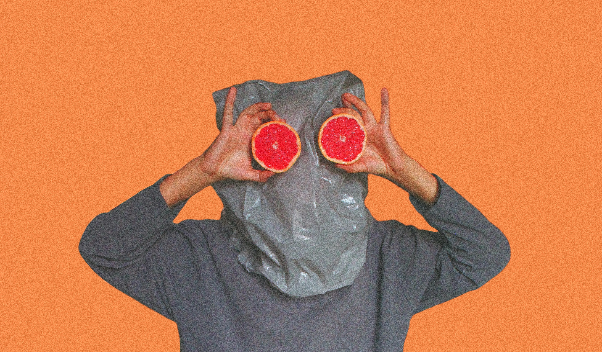
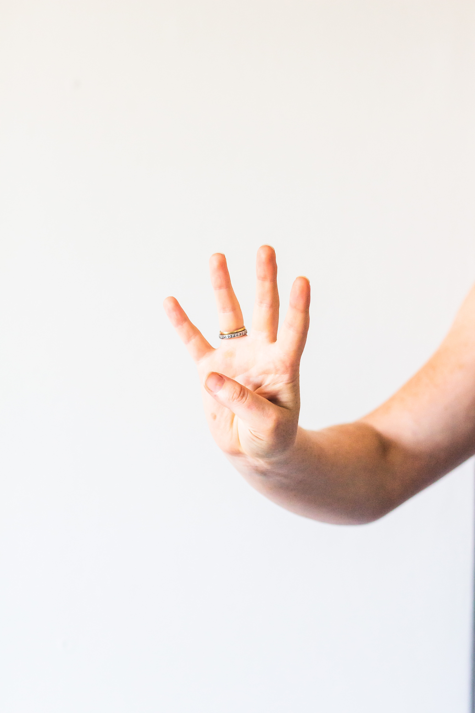

My Podcast
The first episode of our podcast. Join us as we take a brief dive into the world of corporate Twitter accounts and small, local social media teams. We hit on pressing issues like: how can we be more aware of when we're being sold to? How do we draw the line between large corporations and their imitators? And are Pop Tarts virgin shaming?

My Video
A vlog about performing one of the instruction pieces from Yoko Ono's seminal book Grapefuit everyday for a week. Let's learn about the limits of art together!

A Fourth Thing
A fourth resource!